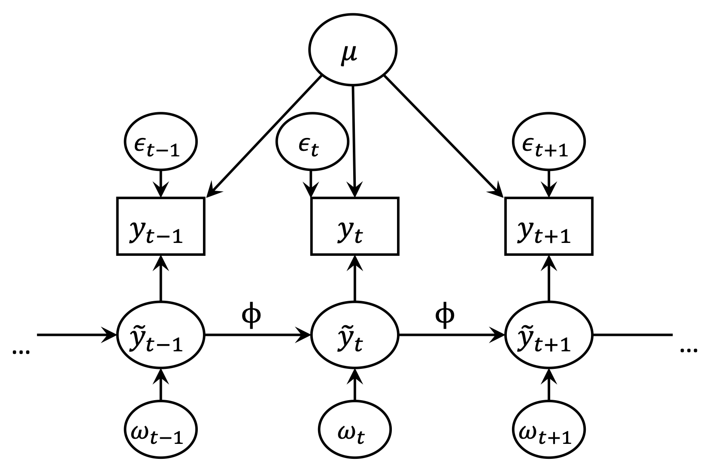

Reliability for single item measures
IJsbrand Leertouwer ![]()
Noémi K. Schuurman
This page is about methods for determining the reliability of single item measures.
Reliability is a prerequisite for the validity of your item. Unreliable measurements can lead to inaccurate and/or biased parameter estimates when you analyse them.
So far, the available methods for determining the reliability of single item measures are based on the test-retest framework. In the following, we first discuss this framework, followed by two methods for estimating reliability for single item measures.
The test-retest framework for classical test theory
The main idea behind the test-retest framework is that when a construct does not change, repeated measurements of that construct should produce the same result. If the results of the measurements indeed do not change they are reliable. If the results of the repeated measurements differ, this can be ascribed to measurement error.
In classical test theory, this implies that each measurement \(y_t\) at timepoint \(t\) consists of a stable part of the score \(\theta\) that is refered to as the true score, and a measurement error \(\epsilon_t\) that is specific to the measurement:
\[ y_{t} = \theta + \epsilon_{t}. \] In this scenario, measurement error can be separated from true scores by determining what part of the measurements is stable over time, and what is variable over time.
The test-retest framework for ILD
The challenge for ILD is that the true score is often expected to vary over time:
\[ y_{t} = \theta_t + \epsilon_{t}. \] As such, we need a way to distinguish the variance in the true score from variance due to measurement error for a single item in our repeated measures, if we want to use a test-retest approach. This generally requires making some assumptions about how the true score and measurement error vary over time.
Below we will discuss two methods that do this, and that can be used for measurements of single items and single or multiple participants: The ‘measurement error autoregressive model’ and the ‘immediate test-retest method’.
- [Internal consistency reliability for ILD]
The Measurement Error Autoregressive Model
The Measurement Error Autoregressive Model (MEAR(1) model) uses a dynamic model - the autoregressive model - to separate what are true scores from what are random measurement errors (Schuurman et al., 2015; Schuurman & Hamaker, 2019). The part of the scores that are a result of the autoregressive process (including residuals) are considered the true part of the scores. The remainder is considered measurement error.

The model is depicted graphically in Figure 1. The model is specified as follows with two equations (note: we use the notation consistent with Schuurman & Hamaker (2019)). Firstly, the measurement equation (measurement model) is specified as:
\[ y_t = \mu +\tilde{y}_t + \epsilon_t.\\ \] In the above equation the observed score at each timepoint \(t\), \(\theta_t\) , consists of
- mean \(\mu\) that is stable over time;
- \(\tilde{y}_t\) which is the part of the score that is the result of an autoregressive process at each time point;
- \(\epsilon\_{t}\) which is the part of the score that is the result of measurement error at each time point.
The measurement errors $_t $ are assumed to be normally distributed with a mean of zero, and a measurement error variance \(\sigma_\epsilon^2\).
The autoregressive process for \(\tilde{y}_t\) is specified as follows in the transition equation of the model:
\[ \tilde{y}_t = \phi \tilde{y}_{t-1} + \omega_t \] Here, current scores \(\tilde{y}_{t}\) is predicted by itself at the nearest previous occassion \(\tilde{y}_{t-1}\) through autoregressive parameter \(\phi\). Given that the scores are only predicted by the nearest previous occassion, this is an autoregressive model of order 1 (an AR(1) model). The dynamic residuals \(\omega_t\), are assumed to be normally distributed with a mean of zero and variance \(\sigma_\omega^2\).
Important to note is that the dynamic residuals have a key feature that distinguishes them from measurement errors: The dynamic residuals carry over from one occassion to the next via the autoregressive effect, while the measurement error do not (Schuurman et al., 2015; Schuurman & Hamaker, 2019). This can also be seen from tracing the arrows in Figure 1.
Ayoko wants to study the dynamics in her enthusiasm. She gathers personal measurements on her phone in the morning, in the afternoon and in the evening. On Sunday afternoon she goes to the cinema and greatly enjoys a movie. This results in a spike in her enthusiasm. The effect of seeing this movie on her enthusiasm still lingers in the evening. In other words, the autoregressive effect has “carried over” this “dynamic residual” from the afternoon to the evening.
Dynamic residuals are sometimes also referred to as ‘innovations’ or ‘dynamic errors’. However, note that even though they are sometimes referred to as errors, they are in fact part of the variance in the true scores.
For the MEAR(1) model, the variance of the true scores is given by:
\[ \sigma_{\tilde{y}}^2 = \frac{\sigma_\omega^2}{1-\phi^2}. \]
On Tuesday morning, Ayoko’s finger slips when rating her enthusiasm on her phone, and she accidentally records the highest possible value. The effect of this error is limited to this single measurement and will not affect the next measurement.
The total variance of the observed scores \(y_{t}\) in the MEAR(1) model consists of the variance due to the autoregressive process \(\sigma_{\tilde{y}}^2\) and the measurement error variance \(\sigma_\epsilon^2\).
In order to calculate the reliability of the construct we calculate the proportion of total variance \(y_{t}\) to the true score variance \(\sigma_{\tilde{y}}^2\):
\[ rel(y) = \frac{\sigma_{\tilde{y}}^2}{\sigma_{\tilde{y}}^2 + \sigma_\epsilon^2} \]
It is important to note that dynamic residuals \(\omega_t\) and measurement errors \(\epsilon_t\) can only be distinguished from each other by the fact that the effect of the dynamic residuals carry over to the next measurement. This has several important implications.
- First, it means that any unobserved effect that is not carried over to the next measurement is ascribed to measurement error. As such, the reliability estimate of the MEAR(1) model is likely to be an underestimate of the true reliability.
On Thursday afternoon, Ayoko has a tasty cookie right before a measuring her enthusiasm. The effect of this cookie on her enthusiasm likely does not carry over to the measurement in the evening. However, the cookie did temporarily boost her enthusiasm. Hence, the boost was a true score, but the MEAR(1) model will consider it measurement error. Hence, the reliability will be underestimated.
What would have happened if Ayoko gathered measurements every 5 minutes?
- Second, it means that when the autoregressive parameter is zero and dynamic residuals do not carry over, the model is not identified. The closer the autoregressive parameter is to zero, the harder it will be to estimate the model (Schuurman et al., 2015; Schuurman & Hamaker, 2019).
Moreover, note that the MEAR(1) assumes a specific model to separate dynamic process from measurement errors. If the model is incorrect, this will affect the reliability estimates as well. However, the MEAR(1) may be extended in various ways (see below).
The example “measurement error?” above illustrates that if not all dynamics are accounted for in the model, this may for lead to an underestimation of the reliability. In that case, for example, the chosen time interval may also affect the reliability estimates (Schuurman & Hamaker, 2019).
Extensions of the MEAR(1) approach
The MEAR(1) model can be extended to capture more complicated dynamics - in essence, the idea behind it can be generalized to any dynamic model; where the dynamic model part is considered the reliable part of scores, and the remainder measurement error. So far, the MEAR(1) model has been extended to account for multiple variables with a VAR(1) model with correlated measurement errors, and to multilevel data (modeling multiple participants) (Schuurman & Hamaker, 2019).
- Scripts for R and Mplus are available in the supplementary materials of Leertouwer et al. (n.d.)
The immediate TRT method
In the immediate test-retest (TRT) method (Dejonckheere et al., 2022) makes use of an adjusted sampling design: In this method, measurements of the construct of interest are quickly followed by another measurement. For example, within a questionnaire of eight items, one of the items would be repeated after these eight items, with a minimum number of items in between.
The reasoning behind this method is that it is unlikely that the true score changed between the first and second measurement of the construct. Hence, any difference between these repeated measurements, which are taken very close in time, is considered to be measurement error.
Specifically, under this assumption measurement error variance can be expressed as the expected value (i.e., average) of the squared differences between the first and repeated measurements, divided by two:
\[ \sigma_\epsilon^2 = \frac{E[\Delta_{trt}^2]}{2} \] In order to calculate reliability, this measurement error variance can be divided by the variance of all measurements that have a replicate measurement:
\[ rel(y) = \frac{\sigma_\epsilon^2}{\sigma_{trt}^2} \]
The clear benefit of this method is that can easily be calculated. However, it does require some additional assumptions:
- The first assumption was already mentioned; this is that the true score does not change between the initial and replicate measurement.
Ayoko also wants to measure and model Tobias’ enthusiasm. She is not particularly interested in the dynamics of his experiences, but rather in his average experiences over a week of time. She again gathers personal measurements in the morning, afternoon and evening, and wants to know how reliable Tobias’ responses are. She uses the immediate test-retest method in order to get an estimate.
Like Ayoko, Tobias likes cookies. During his afternoon he eats a cookie just in between the original measurement of enthusiasm and the repetition. He answers according to his true scores - but they are different for the first and replicate measurement. This would lead to an underestimate of the reliability by the immediate RTR method.
There are no recall effects among the initial and replicate measurement.
People do not always strive for consistency of their responses.
During a particular measurement, Tobias is not very sure how enthusiastic he feels. He decides to just go with a number and feels that 45 should be relatively close. Quickly after giving this rating Tobias is presented with another question about his enthusiasm. Didn’t I already fill this in? Tobias thinks to himself. What was it again? 45? He fills in 45 again. What does this do for the estimated measurement error, and hence the reliability?
The first measurement had some measurement error in it, the replicate measurement is identical. There is hence no difference between the first and replicate measurement, which for the TRT method implies there is no measurement error. Hence, in this case, the TRT method would overestimate the reliability.
- Scripts for R and Mplus are available in the supplementary materials of Leertouwer et al. (n.d.)
References
Citation
@online{leertouwer2023,
author = {Leertouwer, IJsbrand and Schuurman, Noémi K.},
title = {Reliability for Single Item Measures},
date = {2023-06-23},
url = {https://sophieberkhout.github.io/matilda//measurement-theory/validation/reliability-single-item-measures.html},
langid = {en}
}